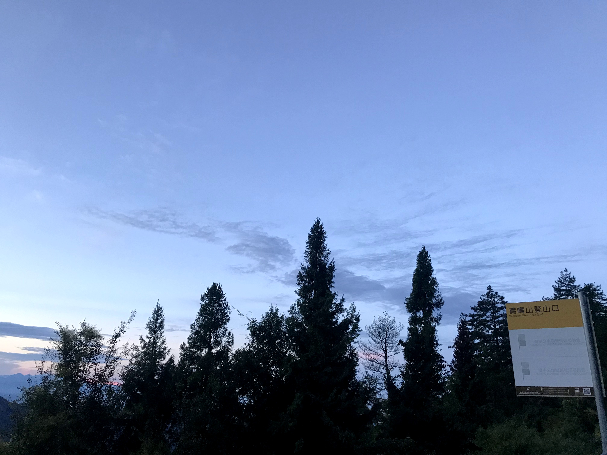
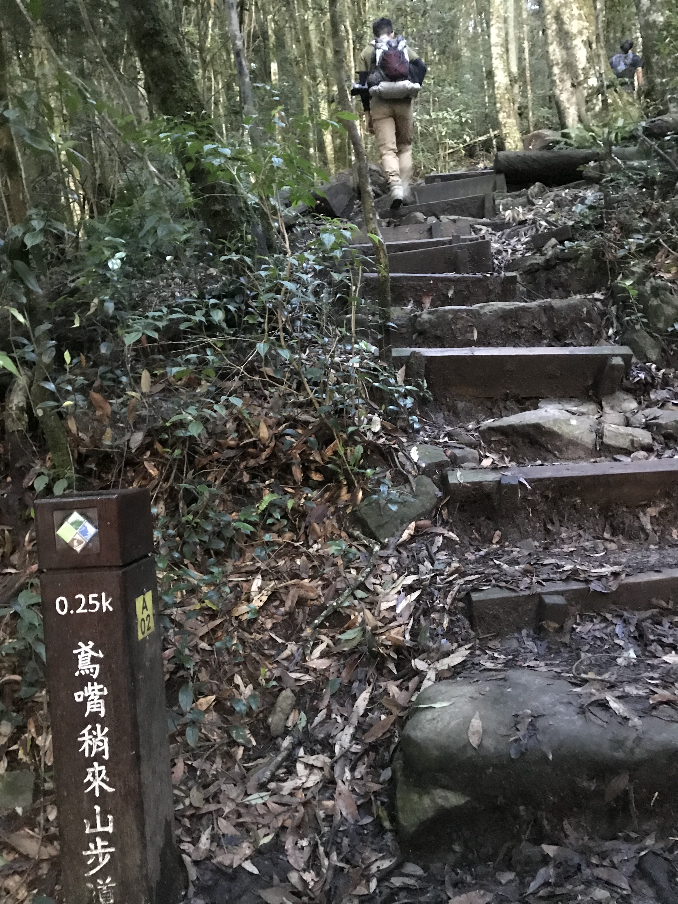
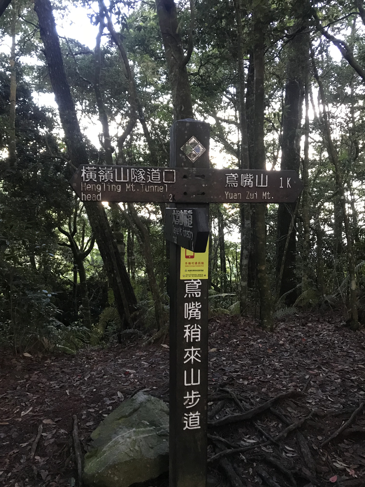
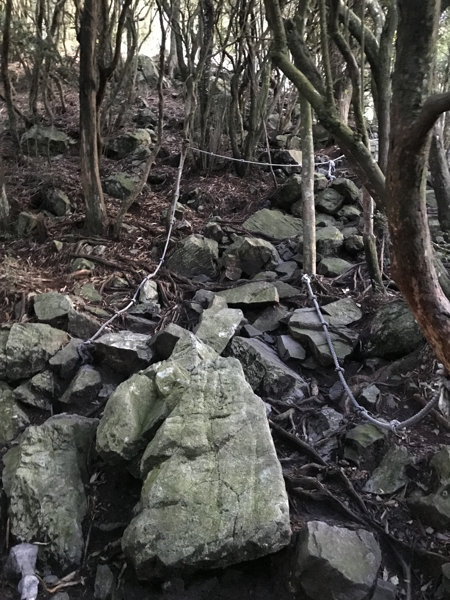
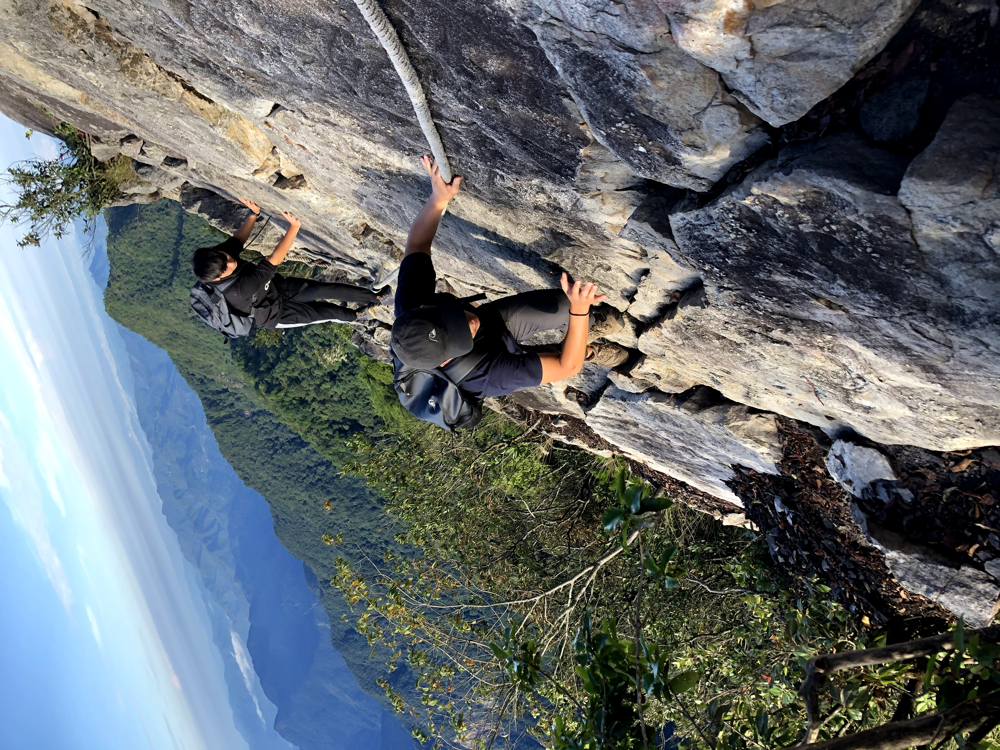
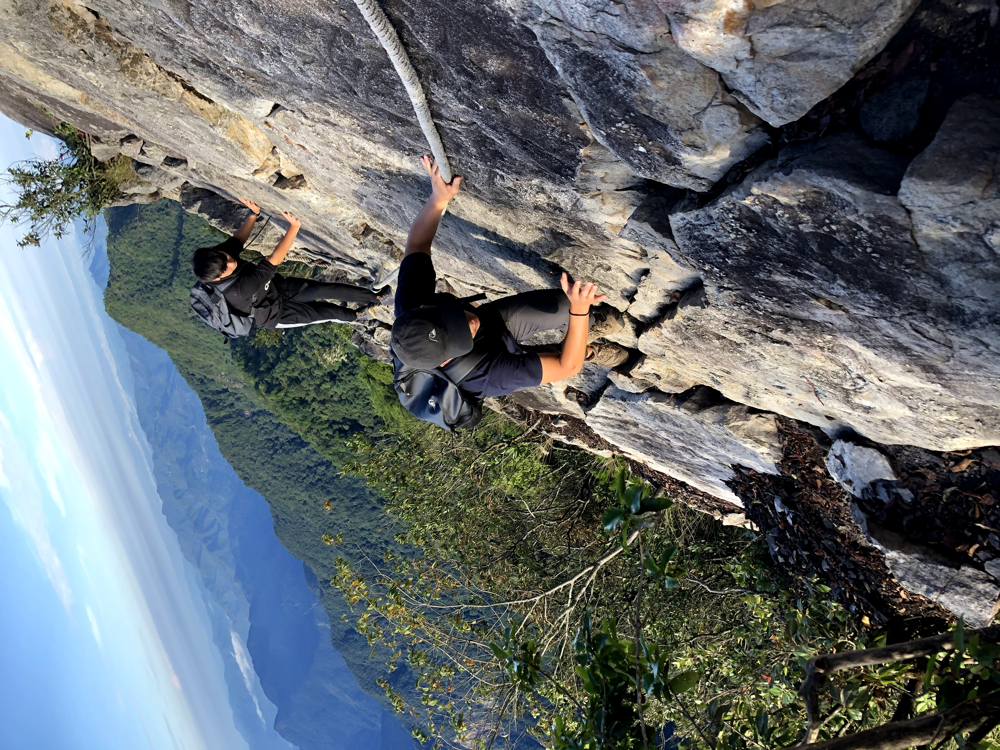
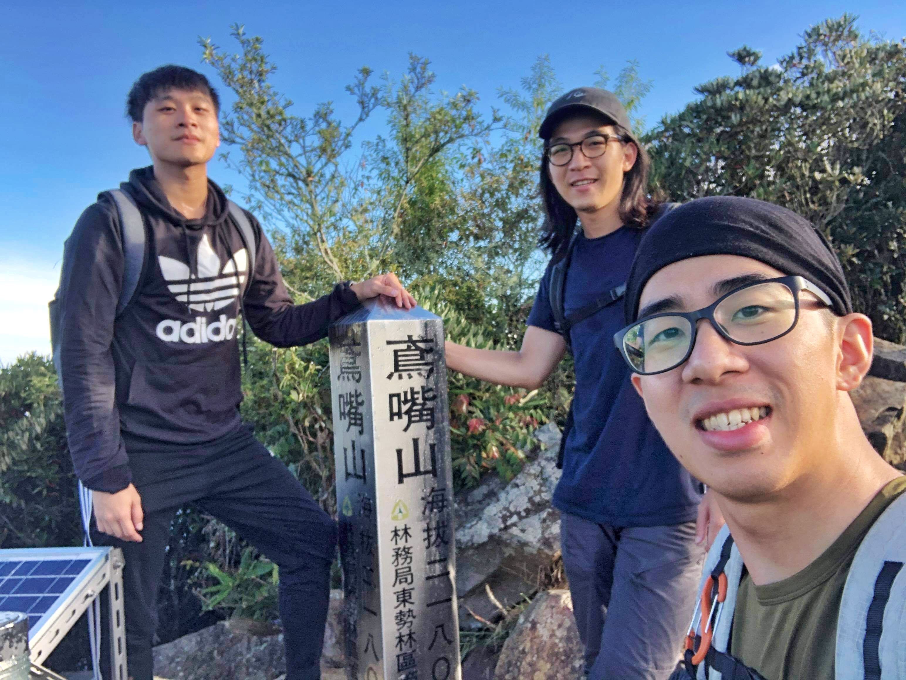

最厲害的不是登頂
而是製作步道跟繩索的人
行前準備
- 建議保旅平險
- 登山包要帶1.5升以上飲水、(雨衣)、保暖外套、(手套)、(暖暖包)、(頭燈)、行動糧、鹽糖
- 另準備一包行李放車上帶一套新的衣物、午餐、水、睡袋
- 衣著：運動鞋、運動長褲、排汗衫（袖套）、毛巾、太陽眼鏡、遮陽帽
- 記得行李輕便為主
當天行程
選擇一大早出發不僅可以避開人潮且較有車位停車同時可以避免午後雷陣雨，不過許多人前一天就在此地露營，所以還是有點難找停車位

週日凌晨2點半出發、4點到登山口、休息小睡1個小時、5點半開爬、來回實際上只需大約三小時（沒有太多人排隊的話）、10點回登山口休息一下、下山吃午餐
山況說明
27k的登山口上山後，起初為較好走的人造木階，但由於每個木階的高度都很高，因此相對較吃力

而隨著高度增加 難度也越來越大
 
後面開始有大石塊及繩索，有些必須踩入石塊縫隙中，並以繩索輔助，以及木梯（當時搬來的人真的很厲害）
 

陸續爬到頂峰，鳶嘴山頂高度為2180公尺，絕美的風景只以大約1.5小時的路程非常值得

總結
自己本身是登山菜雞，這是以個人角度做的評分，主要是因為路程短不需背重物，因此不會太困難
難易度 ： ◼️ ◼️ ◼️ ◻️ ◻️
危險度 ： ◼️ ◼️ ◼️ ◼️ ◻️
值得程度： ◼️ ◼️ ◼️ ◼️ ◼️